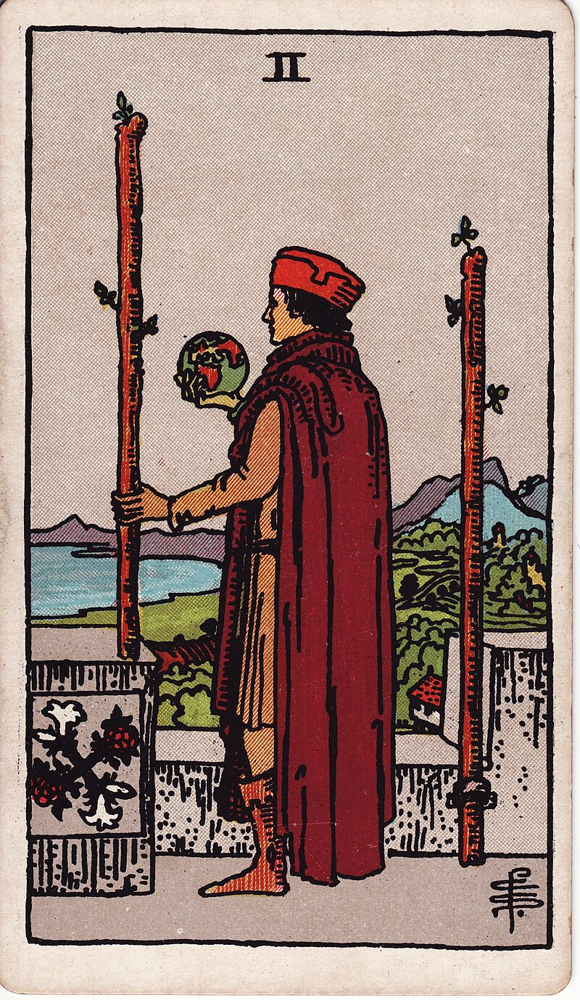

權杖二 TWO OF WANDS

圖像解析
權杖二描繪了一位身著富貴服飾的人物，站在城堡的高處，手持一根權杖，另一根權杖固定在城牆上。他手中還拿著一個地球，眺望著遠方的海洋和陸地。這個場景象徵著規劃、遠見和對未來的展望。
牌義解讀
正位
代表規劃、遠見、選擇、合作、擴展視野、等待時機。暗示著需要做出重要決定，並為未來做好準備。
逆位
代表猶豫不決、缺乏規劃、錯失機會、視野受限。警示需要更果斷的行動和更清晰的方向。
具體解析
愛情方面
- 單身者：
- 正位：對感情有明確規劃，可能遇到志同道合的對象
- 逆位：在感情選擇上猶豫不決，錯過機會
- 穩定關係：
- 正位：關係發展有明確方向，共同規劃未來
- 逆位：對關係發展方向不明確，需要溝通
事業方面
- 求職者：
- 正位：有明確的職業規劃，機會即將到來
- 逆位：職業方向不明確，需要重新定位
- 在職者：
- 正位：事業發展順利，有擴展機會
- 逆位：工作方向需要調整，避免原地踏步
財務方面
- 投資理財：
- 正位：投資規劃明確，有良好遠見
- 逆位：投資方向不明，需要更多研究
- 理財規劃：
- 正位：財務計劃完善，目標明確
- 逆位：財務規劃需要調整，避免盲目
學業方面
- 求學者：
- 正位：學習目標明確，規劃完善
- 逆位：學習方向不明，需要重新規劃
- 考試準備：
- 正位：準備策略得當，目標明確
- 逆位：準備方向需要調整，避免盲目努力
健康方面
- 身體狀況：
- 正位：健康管理有計劃，注意預防
- 逆位：健康計劃執行不力，需要調整
- 心理健康：
- 正位：心理狀態穩定，目標明確
- 逆位：可能感到迷茫，需要找到方向
牌面指引
-
自我探索：
- 擴展視野格局
- 制定長遠計劃
- 培養決策能力
-
行動建議：
- 明確目標方向
- 把握當前機會
- 做好充分準備
-
發展方向：
- 培養領導能力
- 提升決策能力
- 開拓國際視野
搭配其他牌的解讀
- 與權杖一同時出現：新計劃即將開始
- 與星星牌同時出現：遠大理想有望實現
- 與月亮牌同時出現：需要更清晰的方向
- 與太陽牌同時出現：計劃將獲得成功